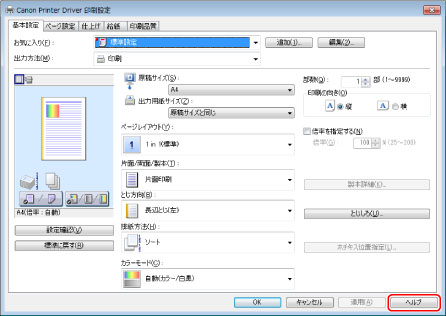
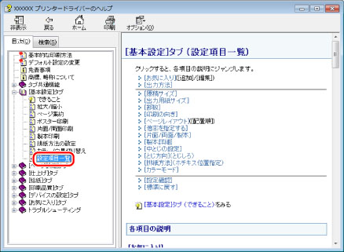

ドライバーをインストールするときや、使用するときにわからないことがある場合は、ヘルプやREADMEファイルを参照してください。
READMEファイル
ドライバーをインストールするときや、お使いになる上で知っておいていただきたい制限事項、および注意事項はREADMEファイルに書かれています。READMEファイルは、ドライバーの以下のフォルダーに保存されています。
LIPSV
LIPSLX 32bit版： \LIPSV\LIPSLX\32BIT\Readme.hta
LIPSLX 64bit版： \LIPSV\LIPSLX\x64\Readme.hta
LIPS4 32bit版： \LIPSV\LIPS4\32BIT\Readme.hta
LIPS4 64bit版： \LIPSV\LIPS4\x64\Readme.hta
LIPSLX
32bit版： \LIPSLX\32BIT\Readme.hta
64bit版： \LIPSLX\x64\Readme.hta
CARPS2
32bit版： \CARPS2\32BIT\Readme.hta
64bit版： \CARPS2\x64\Readme.hta
PS
32bit版： \PS\32BIT\Readme.hta
64bit版： \PS\x64\Readme.hta
ヘルプ
ドライバーの使用方法や各機能の詳細については、ヘルプを参照してください。ヘルプは、以下の手順で表示できます。
1.
ドライバー画面を表示
ドライバーの画面の表示方法については、「
基本的な印刷方法」または「
デフォルト設定の変更」を参照してください。
2.
［ヘルプ］をクリック

ヘルプが表示されます。

トピックペイン（右側のウィンドウ）：説明が表示されます。
ナビゲーションペイン（左側のウィンドウ）：調べたい内容を検索するとき、[検索]/[目次]をクリックします。